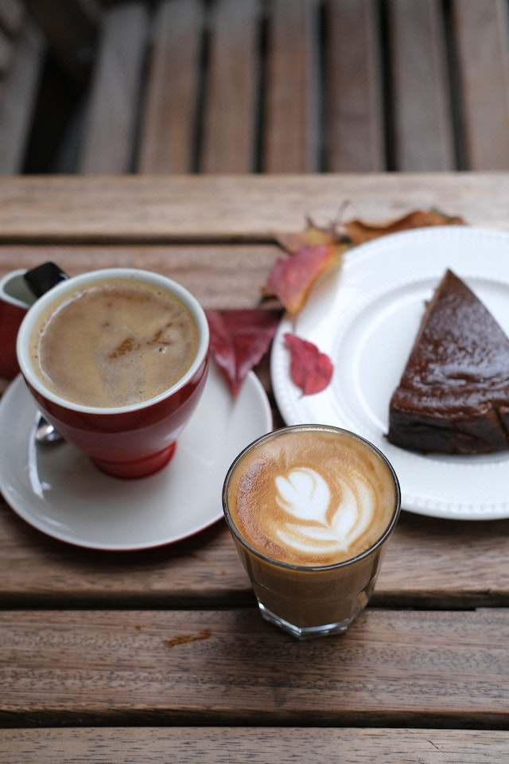

Swedish Sticky Chocolate Cake

Description
The following recipe contains a list of ingredients needed and step-by-step instructions to make the delicious swedish sticky chocolate cake, also known as kladdkaka.
Ingredients
Cake
- 10 tablespoons butter
- 1 ⅓ cups sugar
- 2 eggs
- 5 tablespoons unsweetened cocoa powder
- ¾ cup all-purpose flour
- 1 teaspoon vanilla extract
- ¼ cup coconut oil, at room temperature
- 1 teaspoon vanilla extract
- ¼ teaspoon kosher salt
Truffle topping
- ½ cup heavy cream
- 8 ounces semisweet chocolate chips
- 1 teaspoon pure vanilla extract
- flaky sea salt
Garnish
Steps
Cake
- First Step: Preheat oven to 325˚F. Spray an 8-inch round or square cake pan with baking spray or grease the pan with butter and then dust with flour. Line the bottom of the pan with a round (or square) piece of parchment paper. Don't omit this or the cake will be difficult to remove from the pan.
- Second Step: Place butter in a medium-size microwave-safe bowl and cover bowl with a plate or paper towel. Cook in the microwave on high power for 1 ½ minutes, or until butter is melted.
- Third Step: Add sugar to the bowl with melted butter and whisk to combine. Add eggs, one at a time and stir well after each addition. Add the cocoa, flour, vanilla and salt. Stir just until all dry ingredients are incorporated.
- Fourth Step:Transfer batter to prepared pan and spread out to an even layer. Bake for 20-22 minutes. Don’t over bake. The cake should be slightly firm on the outside, but moist and sticky inside.
- Fifth Step:
Truffle topping
- First Step:While the cake is baking, wash out the bowl. After the cake comes out of the oven, heat the heavy cream in the clean bowl for 1 minute on high power. Add chocolate chips and vanilla. Stir and allow to sit for 1 minute. Then stir until all chocolate has melted and the mixture is smooth.
- Second Step:Pour truffle mixture over the semi-cooled cake and spread to an even layer.
- Third Step:Allow the truffle topping on the cake to cool for 10 minutes (otherwise, the salt will “melt” into the topping”), then sprinkle with about ¼ teaspoon flaky sea salt.
- Fourth Step:Cool the cake at room temperature for several hours, then refrigerate for 30 minutes before removing it from the pan.
- Fifth Step:To remove, run a thin-bladed knife around the outer edges of the cake. Invert pan onto a dinner plate and, holding the plate and pan together, give it a good shake downwards. If the cake doesn’t release, go around the edges again with a knife then repeat with inverting cake. Once the cake is released, invert again so that the truffle layer is on the top.
- Sixth Step:Serve with a dollop of whipped cream.